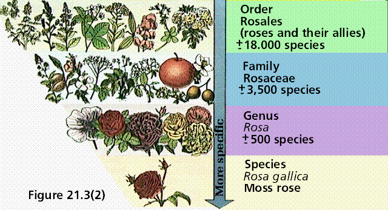
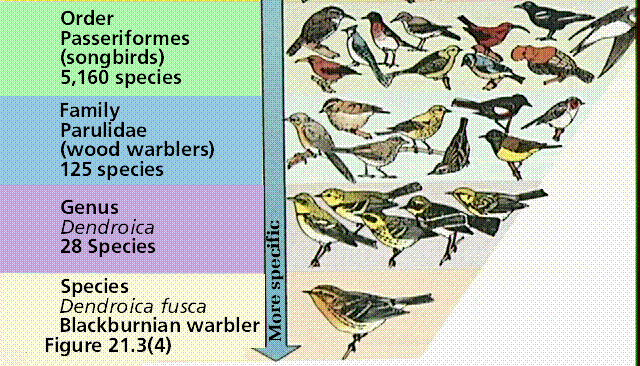

Biological Diversity and Classification | Nomenclature | Construction of Phylogenetic Trees
Taxonomy is that branch of biology dealing with the identification and naming of organisms. The ancient Greek philosopher Aristotle apparently began the discussion on taxonomy. British naturalist John Ray is credited with revising the concept of naming and describing organisms. During the 1700s, Swedish botanist Carolus Linneus classified all then-known organisms into two large groups: the kingdoms Plantae and Animalia. Robert Whittaker in 1969 proposed five kingdoms: Plantae, Animalia, Fungi, Protista, and Monera. Other schemes involving an even greater number of kingdoms have lately been proposed, however most biologists employ Whittaker's five kingdoms. Recent studies suggest that three domains be employed: Archaea, Bacteria, and Eukarya. The classification of a rose is shown in Figure 1, while that of a warbler is illustrated in Figure 2.
Figure 1. Taxonomy of a selected plant
species. Note the increasing inclusivity of the "higher"
taxonomic ranks. Kingdoms have a great deal more types of
creatures in them than do species. Image from Purves et al.,
Life: The Science of Biology, 4th Edition, by Sinauer
Associates (www.sinauer.com)
and WH Freeman (www.whfreeman.com),
used with permission. 
|
Figure 2. Classification of a single species of animal. Note the similar composition of the animal kngdom above as compared to the plant kingdom. Image from Purves et al., Life: The Science of Biology, 4th Edition, by Sinauer Associates (www.sinauer.com) and WH Freeman (www.whfreeman.com), used with permission. |
|
 |
Linneus attempted to pigeon-hole (or classify) all known species of his time (1753). Linnean hierarchical classification was based on the premise that the species was the smallest unit, and that each species (or taxon) nested within a higher category.
|
This image is from http://linnaeus.nrm.se/botany/fbo/welcome.html.en. |
Kingdom Animalia Phylum (Division for plants) ChordataClass MammaliaOrder PrimatesFamily HominidaeGenus Homo |
Taxonomy is part of a larger division of biology known as systematics. Determination of phylogeny is a goal of systematics. This is done by the construction of phylogenetic trees, which in a sense represent evolutionary hypotheses and attempts to define monophyletic groups. To build these trees, we must have data, which comes from the characteristics used in classification. There are several methods of classification: traditional, phentic, and cladistic. They differ in how they value certain characters. Let's consider how traditional classification treats reptiles, birds, and mammals, as shown in Figure 3.
Figure 3. Traditional classification of
reptiles, birds, and mammals. Image
from Purves et al., Life: The Science of Biology, 4th
Edition, by Sinauer Associates (www.sinauer.com)
and WH Freeman (www.whfreeman.com),
used with permission.
Data used in traditional systematics stresses both common ancestry (monophylesis) and the amount of divergence among groups. The traditional, dating to Linneaus view, is that birds have feathers, reptiles have scales, and mammals have hair. Using this as a major character, a classification like that above has been constructed. Fossils, evidence of past life, are not included in this classification. Since all of these groups have the amniotic egg, or a modification of it, they would be united in a larger taxon. Linneus placed each of these groups in a separate class within the Phylum Chordata. A primitive character is one present in the common ancestor and all members of the group, such as the amniotic egg. A derived character is one found only in a particular lineage within the larger group. In our example above, hair and feathers may be viewed as derived characters. A traditional view of our example group is that birds and mammals evolved from reptiles due to their unique derived characters.
Cladistics is a type of systematics developed by the late German biologist Willi Hennig, who attempted to formulate a more objective method of classifying organisms. Cladists group organisms based on the presence of shared derived characters, not the overall similarity of potential group members. In the example cited in Figure 3, the amniotic egg would be used to unite a group sharing common ancestry, since it would NOT be present in a group that was not in the lineage. The use of feathers and hair to separate birds and mammals from reptiles would NOT factor into a cladistic hypothesis, or cladogram, since these are characters unique to only one taxon in our group. Such an approach is shown in Figure 4.
The value of cladistics lies in its capacity to generate (and provide a set of criteria for the evaluation) of multiple hypotheses (alternate cladograms) that can be evaluated with additional data. Almost always the "correct" cladogram employs the principle of parsimony, which proposes that the shortest number of steps or character state changes is most likely correct. An important question....is evolution always parsimonmious? However the ultimate answer to that question unfolds, the rigor cladistics introduces to systematics is useful in getting traditional systematists to look at their subjective classifications in a new light. On the diagram shown in Figure 5, shared derived characters are indicated as hauchers across the lines. The mammal clade (in this case represented by mouse and chimpanzee) is united by fur, the lizard, pigeon, mouse-chimp clade is united by claws or nails, etc.
|
Figure 4. Dissected cladogram of repriles, birds, and mammals. Image from Purves et al., Life: The Science of Biology, 4th Edition, by Sinauer Associates (www.sinauer.com) and WH Freeman (www.whfreeman.com), used with permission. |
|
|
|
Figure 5. Cladogram of the vertebrate chordates. Image from Purves et al., Life: The Science of Biology, 4th Edition, by Sinauer Associates (www.sinauer.com) and WH Freeman (www.whfreeman.com), used with permission. |
|
|
The example used above, if treated cladistically, would produce a very different classification! Note that crocodiles have more in common (in a cladistic sense) with birds than they do with other reptiles. Birds and crocs form a clade, or monophyletic group united by shared derived characters not present in the other groups. If we construct a Linnean group from this cladogram, we have a class of birds and crocodiles, a second class of lizards, snakes, and turtles, and a third class of mammals, as shown in Figure 6.
|
Figure 6. Cladistic-based classification of reptiles, birds, and mammals. Note the changes betweeen the cladistic and traditional classifications as shown in Figure 3. Image from Purves et al., Life: The Science of Biology, 4th Edition, by Sinauer Associates (www.sinauer.com) and WH Freeman (www.whfreeman.com), used with permission. |
|
|
One of the more interesting applications of cladistics is to the question of the pandas. The giant panda was once thought to be a bear, but later its racoon-like characters caused it to be placed closer to racoons. The red (lesser) panda lives in the same areas of China as the giant panda, but has a far greater similarity with racoons, as shown in Figure 7. DNA hybridization studies suggest the giant panda is in the bear clade, while the red panda is in the racoon clade. Both share a common ancestry, as indicated by shared derived characters, followed by convergent evolution of other characters. The diagram above indicates this divergence from common ancestry, and even attempts to show the time of that divergence.
|
Figure 7. Cladistic analysis of the relationships of the giant and lesser pands. Note: time has been added onthe horizontal scale after the cladistic analysis was done. Image from Purves et al., Life: The Science of Biology, 4th Edition, by Sinauer Associates (www.sinauer.com) and WH Freeman (www.whfreeman.com), used with permission. |
|
|
Phenetics is a process by which taxa are clustered together based on the number of their similarities (or differences, depending on the numerical coefficient employed). Traits are measured and either converted into integers or input directly as numerical data. Theses data are then mathematically processed using an algorithm that generates a similarity (or distance as the case may be) matrix. Various graphical representations of this matrix include a phenogram, and principal coordinate plot. Phenetic classifications are plagued by problems of convergence and parallelism, but are useful in their attempt to objectify the classification process. My previous work on triprojectate pollen employed phenetics to deal with a wide array of subjective ratios or other classification methods. Convergence was a given with this group of fossil pollen produced by one or more groups of unknown extinct plants. Since monophylesis could not be established for the entire group, phenetics was use to help delineate possible monophyletic groups for eventual cladistic study.
The naming of species and other taxa follows a set of rules, the International Code of Botanical Nomenclature (ICBN, click here for an online version) for plants, the International Code of Zoological Nomenclature (ICZN) for animals.
Some general rules for nomenclature:
Linnaeus originally placed all living things into either the plant or animal kingdoms. As scientists learned more about the biology of many organisms, this constraining into two kingdoms became less and less defensible.
Evolutionary theory and the cell theory provide us with a basis for the interrelation of all living things. We also utilize Linneus' hierarchical classification system, adopting (generally) five kingdoms of living organisms. Viruses, as discussed later, are not considered living. Recent studies suggest that there might be a sixth Kingdom, the Archaea.
|
Figure 8. A simple phylogenetic representation of three domains of life" Archaea, Bacteria (Eubacteria), and Eukaryota (all eukaryotic groups: Protista, Plantae, Fungi, and Animalia). Image from Purves et al., Life: The Science of Biology, 4th Edition, by Sinauer Associates (www.sinauer.com) and WH Freeman (www.whfreeman.com), used with permission. |
|
|
Monera
Monera are the only kingdom composed of prokaryotic organisms, they have a cell wall, and lack both membrane-bound organelles and multicellular forms. The Archaebacteria, the most ancient of this kingdom, are so different that they may belong to a separate kingdom. Other groups of Monera include the cyanobacteria (autotrophic) and eubacteria (heterotrophic).
Protista
The most ancient eukaryotic kingdom, protists include a variety of eukaryotic body (single-celled-colonial-multicellular?) and nutritional heterotrophic, autotrophic, and both) forms. Perhaps they are best defined as eukaryotes that are NOT fungi, animals, or plants.
Fungi
Fungi are a eukaryotic, heterotrophic, usually multicellular group having multinucleated cells enclosed in cells with cell walls. They obtain their energy by decomposing dead and dying organisms and absorbing their nutrients from those organisms. Some fungi also cause disease (yeast infections, rusts, and smuts), while others are useful in baking, brewing, as foods, drugs and sources for antibiotics.
Plantae
Plants are immobile, multicellular eukaryotes that produce their food by photosynthesis and have cells encased in cellulose cell walls. Plants are important sources of oxygen, food, and clothing/construction materials, as well as pigments, spices, dyes, and drugs.
Animalia
Animals are multicellular, heterotrophic eukaryotes that are capable of mobility at some stage during their lives, and that have cells lacking cell walls. Animals provide food, clothing, fats, scents, companionship, and labor.
Email: mj.farabee@emcmail.maricopa.edu
Last modified:
The URL of this page is: